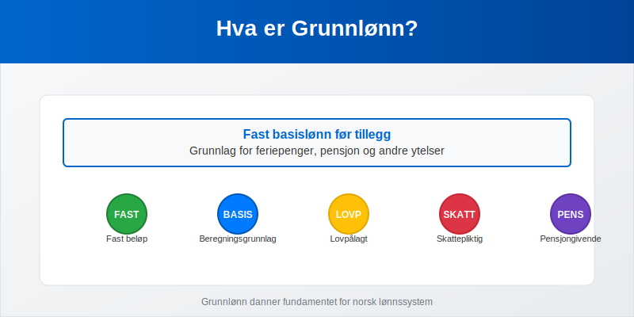
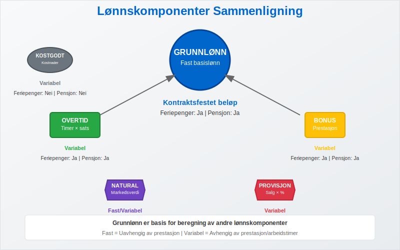
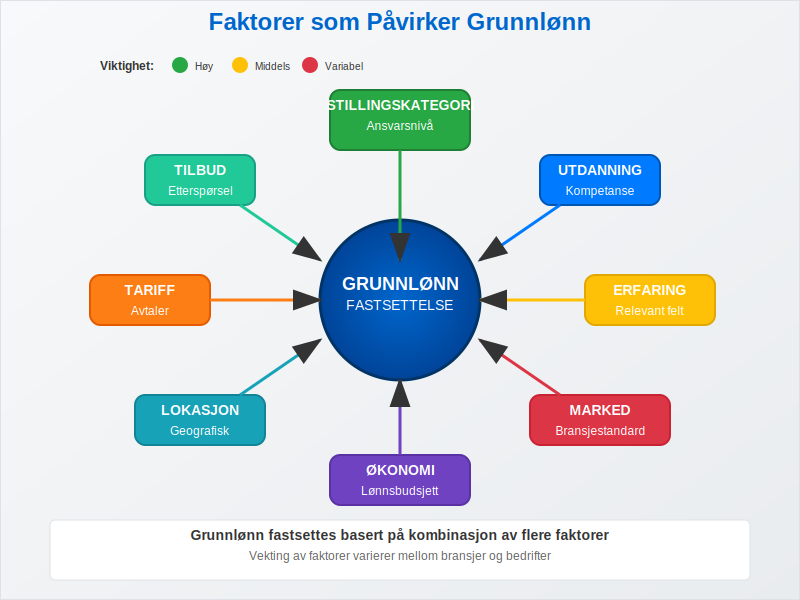
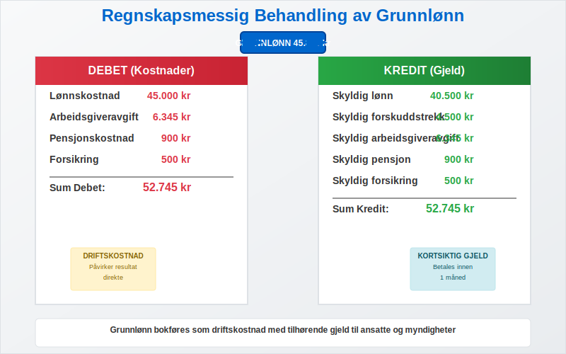
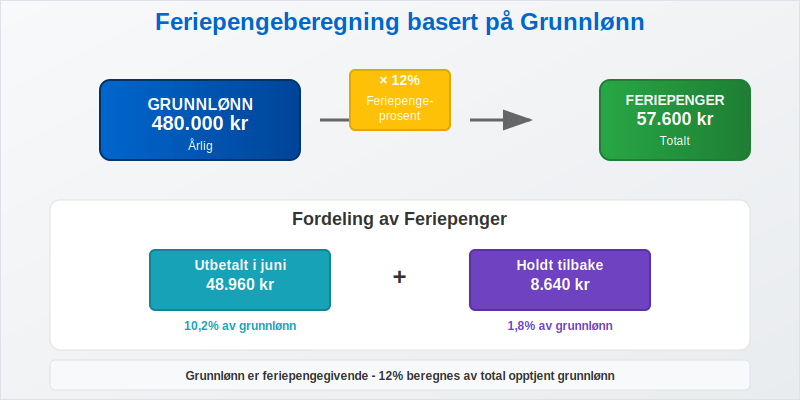
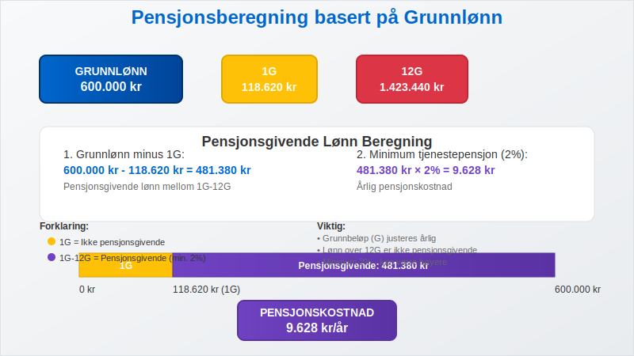
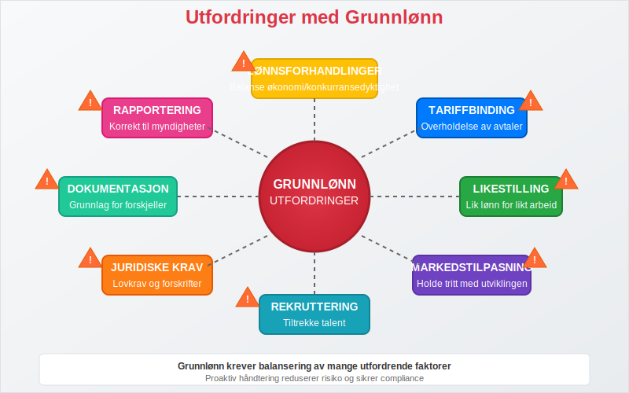
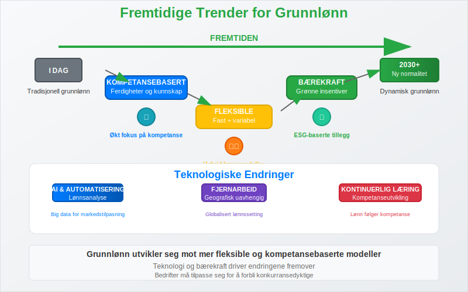

Grunnlønn er den faste basislønnen som utbetales til en ansatt før tillegg som overtidsbetaling, bonus, provisjon eller andre variable lønnskomponenter. Dette er grunnlaget for beregning av feriepenger, pensjon og andre lovpålagte ytelser. Grunnlønn utgjør kjernen i den ansattes fastlønn og er avgjørende for både regnskapsmessig behandling og beregning av sosiale ytelser.

Hva Kjennetegner Grunnlønn?
Grunnlønn har flere karakteristiske egenskaper som skiller den fra andre lønnskomponenter:
- Fast beløp som ikke varierer med prestasjoner eller arbeidstimer
- Grunnlag for beregninger av feriepenger, pensjon og andre tillegg
- Kontraktsfestet i arbeidsavtalen som minimumslønn
- Uavhengig av variable faktorer som salg, produksjon eller overtid
- Pensjongivende inntekt som inngår i pensjonsgrunnlaget
- Feriepengegivende lønn som danner basis for feriepengeberegning
Grunnlønn vs. Andre Lønnskomponenter
Grunnlønn skiller seg fra andre lønnskomponenter på flere viktige måter:

| Lønnskomponent | Type | Beregningsgrunnlag | Feriepenger | Pensjon |
|---|---|---|---|---|
| Grunnlønn | Fast | Kontraktsfestet beløp | Ja | Ja |
| Overtidstillegg | Variabel | Timer × overtidssats | Ja | Ja |
| Bonus | Variabel | Prestasjon/resultat | Ja | Ja |
| Naturalytelser | Fast/Variabel | Markedsverdi | Delvis | Delvis |
| Provisjon | Variabel | Salg × provisjonssats | Ja | Ja |
| Kostgodtgjørelse | Variabel | Faktiske kostnader | Nei | Nei |
Beregning og Komponenter av Grunnlønn
Fastsettelse av Grunnlønn
Grunnlønn fastsettes vanligvis basert på flere faktorer:

- Stillingskategori og ansvarsnivå
- Utdanning og kompetanse
- Arbeidserfaring/Ansiennitet i relevant felt
- Markedssituasjon og bransjestandard
- Bedriftens økonomi og lønnsbudsjett
- Geografisk lokasjon og lokale lønnsforhold
Grunnlønn og Stillingsprosent
For deltidsansatte beregnes grunnlønn basert på stillingsprosent:
Deltids grunnlønn = Heltids grunnlønn × (Stillingsprosent ÷ 100)
Eksempel:
- Heltids grunnlønn: 500.000 kr årlig
- Stillingsprosent: 75%
- Deltids grunnlønn: 500.000 × 0,75 = 375.000 kr årlig
- Månedlig grunnlønn: 375.000 ÷ 12 = 31.250 kr per måned
Grunnlønn og Tariffavtaler
I tariffbundne bedrifter reguleres grunnlønn ofte av tariffavtaler:
| Tariffområde | Minstelønn | Regulering | Særlige bestemmelser |
|---|---|---|---|
| Handel og kontor | Varierer etter alder/erfaring | Årlig | Lærlingtillegg |
| Industri | Basert på stillingskode | Årlig | Skiftarbeidstillegg |
| Offentlig sektor | Lønnstrinn-system | Årlig | Kompetansetillegg |
| Bygg og anlegg | Fagarbeider/lærling | Årlig | Værpenger |
Grunnlønn i Regnskapet
Regnskapsmessig Behandling
Grunnlønn behandles som en driftskostnad i bedriftens regnskap. Lønnskostnadene inkluderer:

- Bruttolønn (grunnlønn + eventuelle tillegg)
- Arbeidsgiveravgift (14,1% av bruttolønn)
- Pensjonskostnader (minimum 2% av lønn mellom 1G-12G)
- Forsikringer og andre personalrelaterte kostnader
Bokføring av Grunnlønn
Månedlig bokføring av grunnlønn følger dette mønsteret:
Debet: Lønnskostnad 45.000 kr
Debet: Arbeidsgiveravgift 6.345 kr
Debet: Pensjonskostnad 900 kr
Kredit: Skyldig lønn 40.500 kr
Kredit: Skyldig forskuddstrekk 4.500 kr
Kredit: Skyldig arbeidsgiveravgift 6.345 kr
Kredit: Skyldig pensjon 900 kr
Periodisering og Avsetninger
Grunnlønn krever også periodisering av relaterte kostnader:
| Avsetning | Beregningsgrunnlag | Prosentsats | Formål |
|---|---|---|---|
| Feriepenger | Opptjent grunnlønn | 12% | Feriepengeforpliktelse |
| Arbeidsgiveravgift feriepenger | Feriepengeavsetning | 14,1% | Avgift på feriepenger |
| Pensjon | Grunnlønn 1G-12G | Min. 2% | Pensjonsforpliktelse |
Grunnlønn og Feriepenger
Feriepengeberegning
Grunnlønn er feriepengegivende og danner grunnlag for feriepengeberegning:

Feriepenger = Grunnlønn × 12%
Utbetalt i juni = Grunnlønn × 10,2%
Holdt tilbake = Grunnlønn × 1,8%
Eksempel på årlig feriepengeberegning:
- Grunnlønn: 480.000 kr
- Feriepenger totalt: 480.000 × 0,12 = 57.600 kr
- Utbetalt i juni: 480.000 × 0,102 = 48.960 kr
- Holdt tilbake: 480.000 × 0,018 = 8.640 kr
Feriepenger ved Variabel Lønn
Når ansatte har både grunnlønn og variable tillegg, beregnes feriepenger av total opptjent lønn:
| Lønnskomponent | Beløp | Feriepengeprosent | Feriepenger |
|---|---|---|---|
| Grunnlønn | 400.000 kr | 12% | 48.000 kr |
| Overtidstillegg | 50.000 kr | 12% | 6.000 kr |
| Bonus | 30.000 kr | 12% | 3.600 kr |
| Totalt | 480.000 kr | 12% | 57.600 kr |
Grunnlønn og Pensjon
Pensjonsgrunnlag
Grunnlønn inngår i pensjonsgrunnlaget og påvirker både tjenestepensjon og folketrygd:

- Folketrygd: Basert på pensjonsgivende inntekt (inkludert grunnlønn)
- Tjenestepensjon: Minimum 2% av lønn mellom 1G-12G
- AFP: Avhenger av pensjonsgivende inntekt over tid
Pensjonsberegning Eksempel
Grunndata:
- Grunnlønn: 600.000 kr årlig
- 1G (grunnbeløp): 118.620 kr (2024)
- 12G: 1.423.440 kr
Pensjonsberegning:
Pensjonsgivende lønn mellom 1G-12G:
600.000 - 118.620 = 481.380 kr
Minimum tjenestepensjon:
481.380 × 2% = 9.628 kr årlig
Grunnlønn og Skatt
Forskuddstrekk
Grunnlønn er skattepliktig inntekt og det trekkes forskuddstrekk månedlig:
| Trekk | Beregningsgrunnlag | Prosentsats | Formål |
|---|---|---|---|
| Forskuddstrekk | Bruttolønn | Variabel | Skatt og trygdeavgift |
| Trygdeavgift | Bruttolønn | 8,2% | Folketrygden |
Skattefradrag og Grunnlønn
Grunnlønn påvirkes av ulike skattefradrag:
- Personfradrag: Reduserer skattbar inntekt
- Minstefradrag: Standardfradrag for lønnsinntekt
- Fagforeningskontingent: Fradragsberettiget
- Reisefradrag: Ved arbeidsreise over 2 km
Utfordringer og Problemstillinger
Vanlige Utfordringer med Grunnlønn

- Lønnsforhandlinger: Balanse mellom konkurransedyktighet og økonomi
- Tariffbinding: Overholdelse av tariffavtaler og minimumssatser
- Likestilling: Sikre lik lønn for likt arbeid
- Markedstilpasning: Holde tritt med markedsutviklingen
- Rekruttering: Attraktiv grunnlønn for å tiltrekke talent
Juridiske Aspekter
Grunnlønn må overholde flere juridiske krav:
| Regelverk | Krav | Konsekvens ved brudd |
|---|---|---|
| Arbeidsmiljøloven | Minimumslønn ved tariff | Erstatningsansvar |
| Likestillingsloven | Lik lønn for likt arbeid | Diskrimineringserstatning |
| Ferieloven | Feriepengeberegning | Tilleggskrav |
| Skatteloven | Korrekt trekk og rapportering | Skatteansvar |
Grunnlønn i Ulike Bransjer
Bransjespesifikke Særtrekk
Grunnlønn varierer betydelig mellom bransjer:
| Bransje | Gjennomsnittlig grunnlønn | Særlige tillegg | Regulering |
|---|---|---|---|
| IT/Teknologi | 650.000 - 900.000 kr | Aksjeopsjoner, bonus | Markedsbasert |
| Helse | 500.000 - 750.000 kr | Vakt, helg, turnus | Tariffregulert |
| Undervisning | 450.000 - 650.000 kr | Kompetansetillegg | Tariffregulert |
| Finans | 600.000 - 1.200.000 kr | Bonus, provisjon | Markedsbasert |
| Handel | 400.000 - 550.000 kr | Provisjon, bonus | Delvis tariffregulert |
Regionale Forskjeller
Grunnlønn varierer også geografisk:
- Oslo-området: 10-20% høyere enn landsgjennomsnittet
- Stavanger: Høy grunnlønn pga. oljeindustri
- Bergen/Trondheim: Noe over landsgjennomsnittet
- Distriktene: Lavere grunnlønn, men også lavere levekostnader
Fremtidige Trender
Utviklingstrekk for Grunnlønn

- Kompetansebasert lønn: Økt fokus på ferdigheter og kompetanse
- Fleksible lønnsmodeller: Kombinasjon av fast og variabel lønn
- Bærekraftsinsentiver: Grønn bonus og bærekraftsmål
- Digitalisering: Automatiserte lønnssystemer og AI-basert lønnsanalyse
- Generasjonsskifte: Ulike lønnsforventninger mellom generasjoner
Teknologiske Endringer
Teknologi påvirker grunnlønn på flere måter:
- Lønnsanalyse: Big data for markedstilpasning
- Automatisering: Redusert behov for enkelte stillinger
- Fjernarbeid: Geografisk uavhengig lønnssetting
- Kompetanseutvikling: Kontinuerlig opplæring påvirker lønnsutvikling
Praktiske Tips for Arbeidsgivere
Fastsettelse av Grunnlønn
- Markedsanalyse: Sammenlign med tilsvarende stillinger i bransjen
- Budsjettplanlegging: Inkluder alle lønnskostnader, ikke bare grunnlønn
- Dokumentasjon: Dokumenter grunnlag for lønnsforskjeller
- Regelmessig vurdering: Årlig gjennomgang av lønnsnivå
Administrasjon av Grunnlønn
- Lønnsystem: Invester i godt lønnssystem for korrekt behandling
- Kompetanse: Sørg for oppdatert kunnskap om lønnsregler
- Rapportering: Korrekt rapportering til Altinn
- Arkivering: Oppbevar lønnsdata i henhold til lovkrav
Konklusjon
Grunnlønn er fundamentet i det norske lønnssystemet og utgjør basisen for beregning av feriepenger, pensjon og andre lovpålagte ytelser. Som arbeidsgiver er det viktig å forstå hvordan grunnlønn påvirker både regnskapet og de ansattes rettigheter.
En korrekt håndtering av grunnlønn sikrer:
- Overholdelse av lovkrav og tariffavtaler
- Rettferdig behandling av ansatte
- Korrekt regnskapsføring og rapportering
- Konkurransedyktig lønnsnivå for rekruttering
Ved å forstå grunnlønn som konsept og dens rolle i det totale lønnssystemet, kan bedrifter sikre både juridisk compliance og ansattes tilfredshet med lønnsforholdene.
For en bredere oversikt over lønnsnivå i Norge, se også Gjennomsnittslønn i Norge. Se Hva er Lønn.